Operating Documentation
Direction 5133315-3, Rev# 14
Signa EXCITE HD 1.5T Service Methods
Module Version 1.0, Version Date 5/15/07
Operating Documentation |
| Required Persons | Preliminary Reqs | Procedure | Finalization |
|---|---|---|---|
| 1 | Not Applicable | Not Applicable | Not Applicable |
The following calibration procedure is used for helium meters used on GE magnet models S1. This calibration procedure is for calibrating the helium meter only. There is no calibration or adjustment on the helium sensor probes. Contact the MAC Team Representative, Region Service Engineer, or the On Line Center if helium level sensor problems are encountered during calibration.
Make sure helium meter assembly is installed in the Signa Systems cabinet per procedures in Magnet Subsystems CD ROM, Direction 2180500-1, GE 1.5T S-I Magnet & Cryogens, Set Up and Calibrations Tab, Magnet System Installation/Checks, Section 2-1-5.
Verify meter is wired for the proper line voltage available at the site. For SIGNA, line voltage is 115 VAC. For International installations, verify power input at site. Reference the vendor manual if line voltage set-up is required.
This section is to verify that there are no shorted wires in the helium circuit cabling from the meter to the sensors within the magnet.
Disconnect cable P101 (25 pin “D” connector) from back panel of Cryogen Meter Assembly. See Illustration 1.
Illustration 1: Helium Meter (rear view)
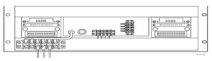
With an ohmmeter, check for open circuit on P101, pin 11 to system cabinet ground. P101 is the cable which is going to the magnet.
Similarly, verify open circuit on P101, pins 13,23,25 to system cabinet ground. If any wire measures 0 ohms ground, troubleshoot the problem.
Disconnect cable P403 from the present helium sensor and re-connect to the other sensor at the magnet terminal box located on rear side of magnet.
Perform Step 2 and Step 3 for second sensor.
| NOTE: | If both sensors have the same “incorrect” resistance readings, the problem is likely to be the P403 cable. If the readings are different, the problem is likely to be within the magnet, or from the Magnet Terminal Box to the magnet penetration |
Disconnect P403 from the Magnet Terminal Box located on rear side of magnet.
With an ohmmeter, check pin-to-pin resistance for all pins on P403. All should read an open circuit.
Reconnect J101 to P101 at rear of Cryogen Meter Assembly.
This section will check for a minimal 75 ma out of the meter required for proper operation of the sensors.
Connect the helium calibration box (46-265286G1) to P403 at the cable end, which connects to the magnet terminal box.
Adjust calibration box to “0” ohms by connecting the ohmmeter to the meter jacks on the calibration box, push and hold the momentary button, then adjust the variable resistor for “0” ohms. This will stimulate a full cryostat or 100% helium reading.
Disconnect the red wire going to the sensor terminal strip (1+) on rear panel of cryogen meter assembly.
Place a current meter in series from sensor terminal strip (1+) where the red wire was removed to the red wire
Turn helium meter on and set helium sample interval thumbwheels to “99”. Allow meter to warm up 15 minutes. See Illustration 2.
Set the helium sample interval thumbwheels to “00”
Verify 75 ma, +/- 1 ma on current meter
Readjust calibration box for “686” ohms using the same adjustment method as in Step 2 above. This will simulate an empty cryostat.
Verify that the circuit current between sensor terminal strip (1+) to the red wire is still 75mA. If the readings is more than 5mA's less than the current set in Step 7 (75mA), the constant current source in the helium meter may be faulty under loaded conditions and the meter should be replaced.
Re-connect the red wire to the sensor terminal strip (1+) on the rear of the cryogen meter assembly.
Illustration 2: Helium Meter (front view)
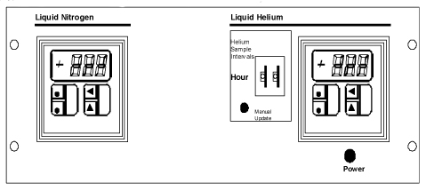
This section will adjust the display and recorder output for proper output with a given input.
With the helium sample interval thumbwheels set to “00” (continuous) and “686” ohms on the calibration box, adjust the “zero” control pot found in the upper control board for a reading of “0.0” on the analogic monitroller display. See Illustration 3. (The upper control board is located on the tray between the nitrogen and the helium analogic display modules).
Readjust calibration box for “0” ohms
Adjust “span” control pot located on the upper control board for a reading of “100.0” on the analogic monitroller display.
With a voltmeter on TBI ANALOG (+) and TBI BOARD REF (-) adjust the “REC METER ADJ” pot on the upper control board for 0.1 volt.
Readjust calibration box for “343” ohms.
Adjust “span” control pot located on the upper control board for a reading of “50.0” on the analogic monitroller display.
| NOTE: | It is necessary to recheck all settings because “zero” and “span” control pots are interactive. |
Illustration 3: Helium Meter Circuit Board
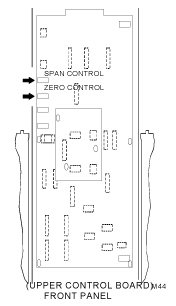
Recheck the 0%, the 100%, and the 50% settings with the appropriate resistance dialed into the meter calibration box.
Reverify recorder output of 0.1 volt on TBI ANALOG (+) and TBI BOARD REF (-) with “0” ohms on calibration box.
Return the helium sample interval thumbwheels to desired setting. Recommended “24”.
Reconnect helium cable to desired sensor/
Set the alarm settings in the following sequence:
| SEQUENCE | PARAMETER | VALUE |
| 1 | PEA | NO SETTING REQUIRED |
| 2 | VA1 | NO SETTING REQUIRED |
| 3 | SP1 | 55.0 |
| 4 | db1 | 1.0 |
| 5 | SP2 | 50.0 |
| 6 | db2 | 1.0 |
| 7 | ACT | 2L |
| 8 | rSt | AUT |
Verify parameter settings by pressing the “mode” switch.
Fill out calibration sticker located on the helium meter with required information. See Illustration 4.
Illustration 4: Cryogen Calibration Label
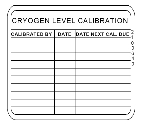
The following calibration procedure is used for helium meters used on GE magnet models S2/S3/S4/SX/MAX. This calibration procedure is for calibrating the helium meter only. There is no calibration or adjustment on the helium sensor probes. Contact the MAC Team Representative, Region Service Engineer, or the On Line Center if helium level sensor problems are encountered during calibration.
| NOTE: | Before performing helium meter calibration, perform the following helium meter check using the MMCT tool if applicable. If values are out of spec, perform the following applicable calibration. |
Helium Meter Check: Plug MMCT, cable J1 into back of Helium meter (S-III -> CX magnets). Verify reading accuracy in table 1. If readings are out of specification, perform the helium meter calibration procedure located in the PM manual.
| Setting | Upper spec | Lower spec |
| 95% | 97.5% | 92.5% |
| 50% | 55% | 45% |
| 0% | 6% | 0% |
Make sure helium meter assembly is installed in the Signa Systems cabinet per procedures in Direction 15100, Signa Installation (3.x), or Direction 15306, Signa Advantage Installation (4.x), or Direction 15406, Signa Advantage 1.5T Installation (5.x).
Verify meter is wired for the proper line voltage available at the site. For SIGNA, line voltage is 115 VAC. For MAX, line voltage is 100 VAC. For International installations, verify power input at site. Reference vendor manual for line voltage set-up if required.
Disconnect cable P403 from back panel of helium meter. See Illustration 5.
Illustration 5: Cryogen Monitor Rear Panel
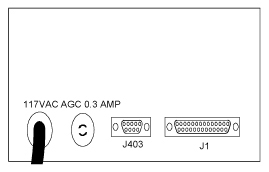
With an ohmmeter, check for an open circuit on P403, pin 1 to system cabinet ground.
Similarly, verify open circuit on pins 2,3,4,5,6, and 7 to system cabinet ground. If any wire measures 0 ohms ground, troubleshoot the problem.
Disconnect P403 from magnet terminal box located on rear side of magnet
With an ohmmeter, check pin to pin resistance for all pins on P403. All should read an open circuit.
| NOTE: | The following steps will require the engineer to remove the covers on the helium meter to access the adjustment pots identified if adjustments are required. |
Connect the helium calibration box (46-2652886G1) to P403 at magnet terminal box.
Adjust calibration box to “686” ohms by connecting ohmmeter to meter jacks on calibration box, push and hold the momentary button, then adjust the variable resistor for 696 ohms. This will simulate any empty cryostat or 0% helium reading.
Connect ammeter between J403, pin 1 (1+) on rear panel of helium meter and P403 cable, pin 1 (1+).
Place a jumper between J403, pin 7 (1-) on rear panel of helium meter and P403 cable, pin 1 (1+). The jumper provides the return path to the meter for the sample current which drives the helium sensor probe.
Turn helium meter on and set the sample interval thumb wheel switch to “00” (continuous).
Adjust “current” pot (P9) until 75 mA is attained on ammeter. See Illustration 6.
Illustration 6: Cryogen Monitor Front Panel
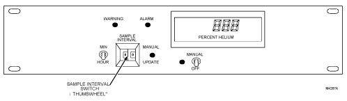
Readjust calibration box for “0” ohms using the same adjustment method as in Step 2 above.
Verify current on J403, pin 1 (1+) is still 75 mA. If the reading is more than 5 mA's less than the current set in Step 6 (75 mA), the constant current source in the helium meter may be faulty under loaded conditions and the meter should be replaced.
Reconnect P403 on magnet terminal box.
Connect helium calibration box to J403 on rear panel of helium meter.
With power removed from the cryogen meter connect an ohmmeter between R40 and R42. Adjust P3 to 6,000 ohms to simulate a 60 inch sensor length range. See Illustration 7 for resistor locations.
While measuring the voltage on connector J1, pin 7 to pin 8 (common) on the rear of the helium meter, adjust the “full scale” pot (P4) until the output voltage is exactly 10 volts
Readjust calibration box to “686” ohms
Adjust the “inch” pot (P1) until “0” volts is read between J1, pin 7 and pin 8
Readjust calibration box to “0” ohms
With thumbwheel switches set to “00”, verify pin 7 to pin 8 of connector J1 reads 10 volts.
Change thumbwheel selector to some nonzero time such as “10”
Push “manual update” button and adjust the D/A pot (P10) until the output voltage is 10 volts on J1, pin 7 to pin 8.
With “00” on the helium meter thumbwheel, “0” ohms an calibration box, and 10 volts still present on pin 7 and 8 of J1
adjust “recorder pot” (P11) for 1 volt on pin 20 to pin 8 on J1
With “00” on the helium meter thumbwheel, “0” ohms on calibration box, and 10 volts still present on pin 7 and pin 8 of J1, adjust “display pot” (P8) until 100% is displayed on the helium meter digital output display.
Replace cable P403 on rear of helium meter and check helium reading on the display.
Change helium level sensor by swapping cryogen monitor cable at magnet instrumentation connector box (from LHe P403- 1 to LHe P403-2). See Illustration 8. Compare readings. Helium level readings should be within 1%. Non-comparable readings indicate a helium level sensor problem
Reset helium meter thumbwheel switches to desire setting (ie. 24).
Illustration 7: Cryogen Monitor Main Board Adjustment Pot Locations
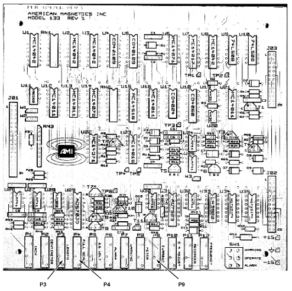
Connect Helium Calibration Box to J403 on rear panel of helium meter.
Illustration 8: Magnet Instrumentation Box
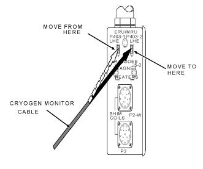
To set the warning set point, place set point selected toggle switch (SW 1) located on the right rear of the printed circuit board in the alarm set point position (to the left or towards the circuit board)
Adjust pot 7 until the desired setting is read on the helium display
To set the alarm set point, place set point, select toggle switch (SW 1) located on the right rear of the printed circuit board in the alarm set point position (to the right or away from the circuit board)
Adjust pot P6 until the desires setting is read on the helium display
Fill out calibration sticker located on the helium meter with required information. See Illustration 4.
Verify meter is wired for the proper line voltage available at the site. For SIGNA, line voltage is 115 VAC. For MAX, line voltage is 100 VAC. For International installations, verify power input at site. Reference vendor manual for line voltage set-up if required.
1. Make sure helium meter assembly is installed per Direction 15180, the 0.5T Compact Magnet & Cryogen Subsystem Manual, Set-Up & Cal.
Verify meter is wired for the proper line voltage available at the site. For VECTRA systems, line voltage is 100 VAC. For International installations, verify power input at site. Reference vendor manual for line voltage set-up if required.
Disconnect the four wires from “sensor” terminal strip on back panel of helium meter. Make sure wires are properly labeled for proper re-connection. See Illustration 9.
With an ohmmeter, separately check for open circuit on each wire to system cabinet ground.
Disconnect P302 from magnet connector assembly located on magnet.
With an ohmmeter, check pin to pin resistance for all pins on P302. All should read an open circuit.
Re-connect all wires to the proper connections on the rear of the meter accept the red wire (I+).
Illustration 9: Helium Meter (rear view)
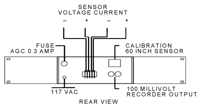
| NOTE: | The following steps will require the engineer to remove the covers on the helium meter to access the adjustment pots identified if adjustments are required. |
Connect the helium calibration box (46-265286G1) to P302.
Adjust calibration box to “686” ohms by connecting ohmmeter to meter jacks on calibration box, push and hold the momentary button, then adjust the variable resistor for 686 ohms. This will simulate an empty cryostat or 0% helium reading.
Connect ammeter between the red wire (I+) and it’s terminal lug on the rear of the helium meter.
Turn helium meter on. See Illustration 10.
Press and hold the READ button on front of the helium meter.
Adjust CURRENT ADJ pot (P7) until 75 mA is attained on ammeter.
Re-adjust calibration box for ”0” ohms using the same adjustment method as in Step 2above.
Illustration 10: Helium Meter (front view)
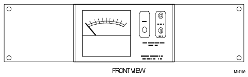
Verify I+ current on ammeter is still 75 mA. If the reading is more than 5 mA’s less than the current set in step 6 (75 mA), the constant current source in the helium meter may be faulty under loaded conditions and the meter should be replaced.
Re-connect the red wire (I+) on rear of helium meter.
With power removed from the Cryogen Meter connect an ohmmeter between R40 and R42. Adjust P3 to 6,000 ohms to simulate a 60 inch sensor length range.
Depress and hold the front panel READ pushbutton.
While measuring the voltage on TP OUTPUT and ground, adjust the FULL SCALE pot (P4) until the output voltage is exactly 10 volts.
While holding the READ pushbutton down, adjust METER pot (P5) for 100% reading on display.
Re-adjust calibration box to “686” ohms.
Depress and hold the front panel READ pushbutton.
While measuring the voltage on TP OUTPUT and ground, adjust the INCH pot (P1) until “0” volts is read on the voltmeter.
Readjust calibration box to “0” ohms.
Connect voltmeter to RECORDER OUTPUT jacks on rear of helium meter
Depress and hold the front panel READ push button.
Adjust REC pot (P6) for 100 millivolts
Disconnect helium meter calibration box and reconnect to P302, LHE-1 on Magnet Connector Assembly.
Fill out calibration sticker located on the helium meter with required information. See Illustration 4
| ||||
| THIS CALIBRATION PROCEDURE IS TO BE PERFORMED ONLY BY TRAINED SERVICE PERSONNEL FAMILIAR WITH ELECTRICAL SAFETY PRECAUTIONS AND PROPER ELECTRICAL SAFETY PROCEDURES. THE MODEL 111GE CONTAINS HIGH VOLTAGES CAPABLE OF PRODUCING LIFE-THREATENING ELECTRICAL SHOCK. DO NOT PERFORM ANY OPERATIONS ON ANY AMI EQUIPMENT WITH THE COVER REMOVED UNLESS QUALIFIED TO DO SO AND ANOTHER PERSON QUALIFIED IN FIRST AID AND CPR IS PRESENT. | ||||
| NOTE: | This instrument was calibrated at the factory for 60” AMI Lhe level sensors. The following information is furnished in the event the instrument is suspect of not being in calibration or for routine maintenance. |
Turn power off by disconnecting the power cord. Lock and tag power cord
Disconnect the helium probe cable from the helium sensor connector, J403, and the remote monitoring cable from the remote monitoring connector, J1, located on the rear panel of the instrument. Remove the instrument cover.
Short J403 pins 1 & 8 together. Short J403 pins 6 & 7 together
Attach a current meter between the sensor current pins J403 pin 1 (+) and J403 pin 7 (–) located on the rear panel of the instrument. The sensor current pins and current meter should now be wired as shown in Illustration 11.
Illustration 11: Current Meter Connections
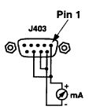
To operate the meter with continuous sensor current , short jumpers W1 and W2 located on the printed circuit board near the front panel (see Illustration 12). This operation performs the same function as continually pressing the front panel READ push-button.
Illustration 12: Circuit Board
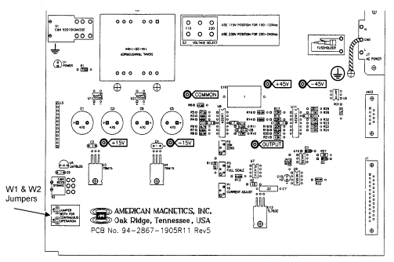
Observe the correct electrical equipment safety precautions and set power switch on front panel to the up position.
If the sensor current was not jumpered for continuous operation as described in step 5, press the front panel READ push-button to power the sensor current.
Adjust potentiometer, P1 (CURRENT ADJUST) (see Illustration 10-15) on the printed circuit board until the current meter displays 75.0 mA. Turn power off by placing the front panel power switch in the down position.
Attach a 686 ohm resistor (46-265286G1) capable of dissipating 4 watts in series with the current meter between the sensor current pins J403 pin 1 (+) and J403 pin 7 (–) located on the rear panel of the instrument. The sensor current pins and current meter should now be wired as shown in Illustration 13
Illustration 13: Current Meter Connections
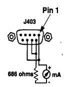
To operate the meter with continuous sensor current during this calibration procedure, short jumpers W1 and W2 located on the printed circuit board near the front panel (see Illustration 10-15). This operation performs the same function as continually pressing the front panel READ push-button.
Observe the correct electrical equipment safety precautions and place power switch on the front panel to the up position.
If the meter is not operating with continuous sensor current as described in step 10, press the front panel READ push-button to activate the sensor current.
Verify the current meter displays 75.0 +/– 0.1 mA. Turn power off by placing the front panel power switch in the down position.
Level Calibration
| ||||
| THIS CALIBRATION PROCEDURE IS TO BE PERFORMED ONLY BY TRAINED SERVICE PERSONNEL FAMILIAR WITH ELECTRICAL SAFETY PRECAUTIONS AND PROPER ELECTRICAL SAFETY PROCEDURES. THE MODEL 111GE CONTAINS HIGH VOLTAGES CAPABLE OF PRODUCING LIFE-THREATENING ELECTRICAL SHOCK. DO NOT PERFORM ANY OPERATIONS ON ANY AMI EQUIPMENT WITH THE COVER REMOVED UNLESS QUALIFIED TO DO SO AND ANOTHER PERSON QUALIFIED IN FIRST AID AND CPR IS PRESENT. | ||||
| NOTE: | This procedure is a continuation of the calibration procedure and should be performed after the Sensor Current Calibration procedure above. |
Verify the Cryogen Meter has been powered off.
Remove the current meter from the helium sensor connector, J403, and keep the 686 ohm resistor (46-265286G1) capable of dissipating 4 watts in the circuit. The sensor connector pins should now be wired as shown in Illustration 14.
Illustration 14: Current Meter Connections
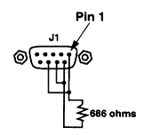
Connect a voltmeter between OUTPUT and COMMON located on the printed circuit board. See Illustration 12
Power the Cryogen Meter and sensor current by placing the power switch in the up position.
Adjust potentiometer, P2 (ZERO) until the voltmeter displays 0.000 VDC.
Verify the front panel meter displays 0.0% +/– 1.0%.
Turn power off by placing the power switch in the down position
Place a shorting jumper across the 686 ohm test resistor.
Power the Cryogen Meter and sensor current by placing the power switch in the up position.
Adjust the potentiometer, P3 (FULL SCALE) until the voltmeter displays 1.000 VDC.
Verify the front panel meter displays 100.0% +/– 1.0%.
Turn power off by placing the power switch in the down position, remove the shorting jumpers and test resistor, remove jumpers W1 and W2 for constant read mode (if installed), reinstall the cables to J1 and J403, and replace the Cryogen Meter cover. The Cryogen Meter calibration is complete.
If applicable use the Magnet Monitor Circuit Tester (MMCT). Plug MMCT, cable J1 into short jumper cable run 831 on the Magnet Monitor. Verify reading accuracy in table below. If readings are out of specification, perform the helium meter calibration procedure located in the PM manual. If the MMCT is not available use the Helium meter calibration box, starting at Step 2.
| Setting | Upper spec | Lower spec |
| 95% | 97.5% | 92.5% |
| 50% | 55% | 45% |
| 0% | 6% | 0% |
| ||||
| THIS CALIBRATION PROCEDURE IS TO BE PERFORMED ONLY BY TRAINED SERVICE PERSONNEL FAMILIAR WITH ELECTRICAL SAFETY PRECAUTIONS AND PROPER ELECTRICAL SAFETY PROCEDURES. THE MODEL 111GE CONTAINS HIGH VOLTAGES CAPABLE OF PRODUCING LIFE-THREATENING ELECTRICAL SHOCK. DO NOT PERFORM ANY OPERATIONS ON ANY AMI EQUIPMENT WITH THE COVER REMOVED UNLESS QUALIFIED TO DO SO AND ANOTHER PERSON QUALIFIED IN FIRST AID AND CPR IS PRESENT. | ||||
| NOTE: | This procedure is for calibrating the Granite Magnet Monitor. The Granite Magnet Monitor was the first Magnet Monitor to be shipped with LCC magnets. |
| NOTE: | This instrument was calibrated at the factory for 60” AMI LHe level sensors. The following information is furnished in the event the instrument is suspect of not being in calibration or for routine maintenance |
Determine if the Magnet Monitor is in need of calibration by using the Helium Meter Calibration Box, part number 46-265286G1. Set the resistances to the values shown in table 10-5-1. If your values are in spec, the magnet monitor is calibrated. If the values are out of spec, proceed with the calibration procedure at Step 3.
Table 1: Resistance Check
| Resistance setting | Nominal Value | Specification |
| 230 ohms | 66.4% | 63.4% to 79.4% |
| 460 ohms | 32.7% | 29.7% to 35.7% |
| 686 ohms | 0.0% | 0.0% to 3.0% |
1. In the magnet room, remove Run 828 from P403 (MS1-A3-A1-P403). On the connector of Run 828:
Short pins 1 and 8 together
Short pins 6 and 7 together
Attach the multimeter between pin 1 (+) amd pin 7 (-). See Illustration 15
Illustration 15: Wiring for Sensor Calibration
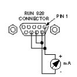
Plug the magnet monitor's power cord into an outlet. Turn the magnet monitor on.
Wait approximately 2 minutes to allow the system to settle.
Press the sample button
Verify the multimeter reads 75.0 mA
Turn off the magnet monitor's power switch
On the connector of Run 828: replace the Multimeter with a 686 ohm resistor capable of dissipating four watts (or use the Helium Resistance Box (46-265286G1) to simulate 686 ohms). The connector pins should now be wired as shown in Illustration 16.
Illustration 16: Wiring for Current Source Voltage Calibration
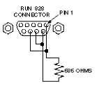
Connect the multimeter between TP1 on the magnet monitor interface board and the chassis common.
Turn on the magnet monitor
Wait approximately 2 minutes to allow the system to settle
Press the sample button
Adjust the R7 GAIN potentiometer until the multimeter reads 5.000 Vdc. See Illustration 16 for the location of R7
Verify that the front panel reads 0% +/- 1.0%
Turn off the magnet monitor's power switch
Place a shorting jumper across the 868 ohm test resistor (or set the helium resistance box to 0 ohms).
Turn off the magnet monitor
Wait approximately 2 minutes to allow the system to settle.
Press the sample button
Verify that the voltmeter reads 0.000 Vdc.
Verify that the front panel reads 100% +/- 1.0%
Repeat from Step 13 until no further changes are necessary.
Reconnect run 828 to P403
If applicable use the Magnet Monitor Circuit Tester (MMCT). Plug MMCT, cable J1 into short jumper cable run 831 on the Magnet Monitor. Verify reading accuracy in table below. If readings are out of specification, perform the helium meter calibration procedure located in the PM manual. If the MMCT is not available use the Helium meter calibration box, starting at Step 2.
| Setting | Upper spec | Lower spec |
| 95% | 97.5% | 92.5% |
| 50% | 55% | 45% |
| 0% | 6% | 0% |
| NOTE: | There are no adjustments for calibrating the Advantech magnet monitor. There is a functional check. If the following check procedure is out of limits, the magnet monitor should be replaced. |
Obtain the helium meter calibration box, part number 46-265286G1.
Set the resistances to the values shown in Table 2. If you do not meet the specifications, your magnet monitor should be replaced.
Table 2: Resistance Check
| Resistance setting | Nominal value | Specification |
| 230 ohms | 65.7% | 61.7% to 69.7% |
| 460 ohms | 31.3% | 28.3% to 34.3% |
| 686 ohms | 1.2% | 0.0% to 2.5% |
No finalization steps.